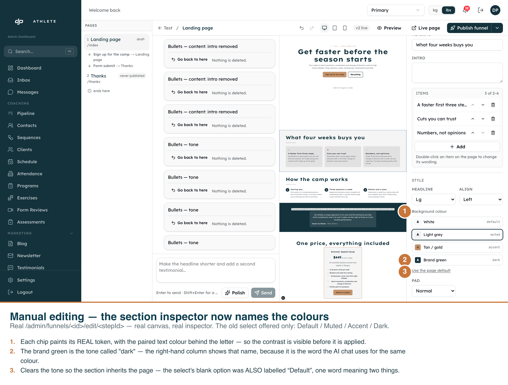
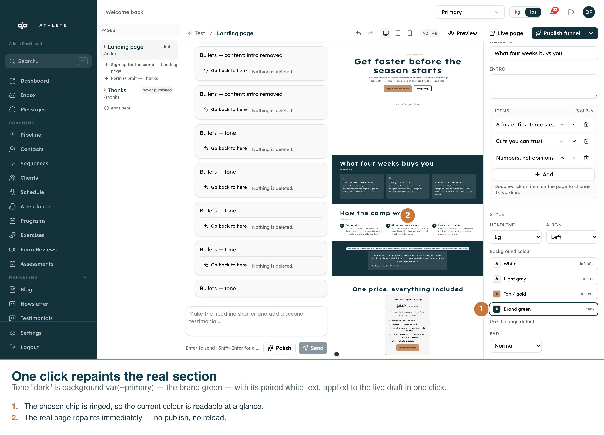
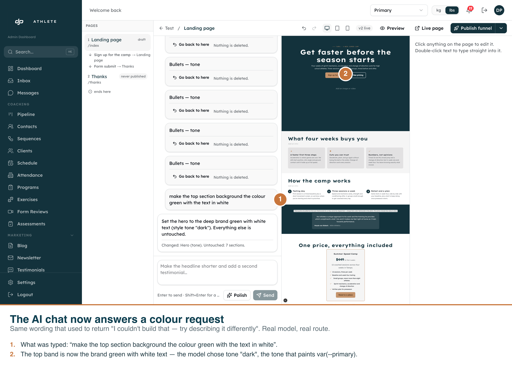

Three shots, all driven against the real app on the real routes. The annotations are burned into each PNG, so any one of them stands on its own.

/admin/funnels/<id>/edit/<stepId> — the “Background colour” chips replace a
select whose four options read “Default / Muted / Accent / Dark”. Each chip paints its real token
with its paired text colour, and carries the tone name the AI chat uses for the same colour.

The op the app actually sent:
{"op":"update_section","id":"benefits","style":{"tone":"dark"}}. The canvas repaints
immediately — no publish, no reload.

Real model, real route. “make the top section background the colour green with the text in white”
→ “Set the hero to the deep brand green with white text (style tone "dark"). Everything
else is untouched.” The stored document went from unset to dark;
the script fails rather than captions a pass if it does not.
npm run dev, then node scripts/capture-section-colour-picker.mjs and
node scripts/capture-ai-colour-turn.mjs. Dev clone only — both refuse any other
project ref. The second one spends a real model call, which is the only way to photograph a model
changing its mind. Light only: the admin components were never built against .dark.